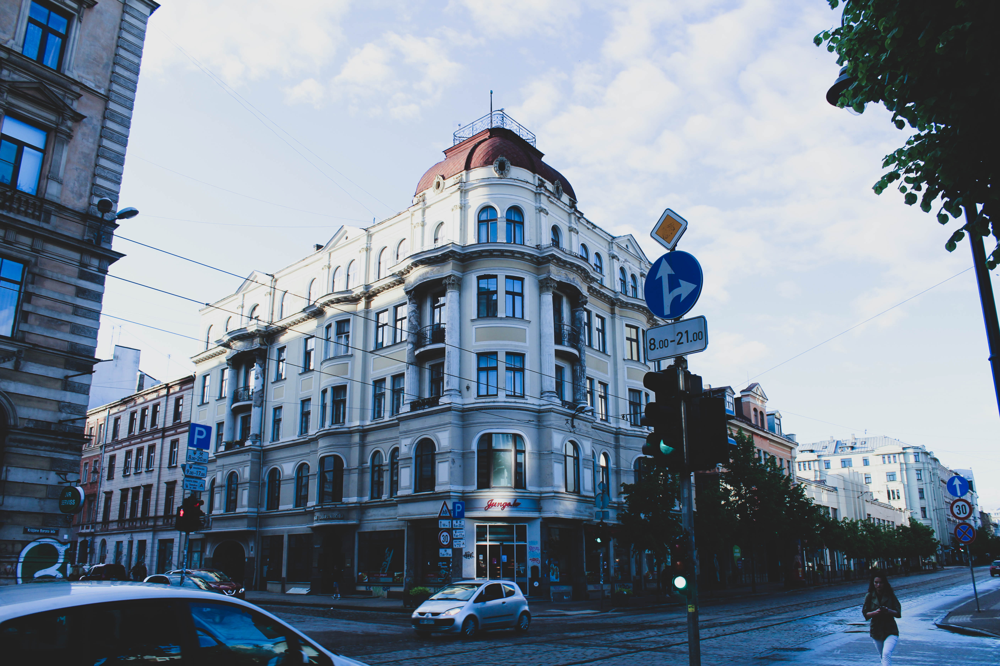

Krišjāņa Barona iela
Pēc izkāpšanas no 23. trolejbusa, kas pamatā dodas no Purvciema uz Centrālo staciju, bet dažreiz arī uz tā trolejbusa parku Jelgavas ielā, es šķērsoju kādu no A. Čaka ielai perpendikulārajām ieliņām un attopos uz skaistās Krišjāņa Barona ielas. K. Barona iela nosaukta par godu Krišjānim Baronam – latviešu rakstniekam, Dainu tēvam, jaunlatvietim. Tās virsma ir segta brīnišķīgi vēsturiskā bruģī, kamēr pāri tam stiepjas tramvaja sliedes, pa kurām jau no 1900. gada kursē pilsētas tramvaji. Virzoties pa to Latvijas Universitātes virzienā, ir sastopami vairākas grāmatnīcas, kafejnīcas kā arī Vērmanes dārzs. Līdzīgi kā citas pilsētas ielas, arī K. Barona ielā ir nesen tikuši veikti remontdarbi, atjaunojot ietves un izveidojot riteņbraucēju celiņus.